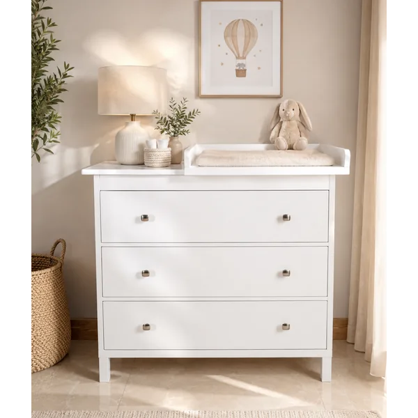
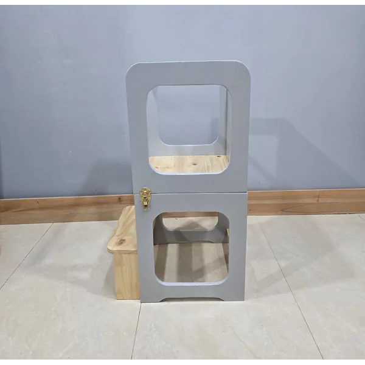
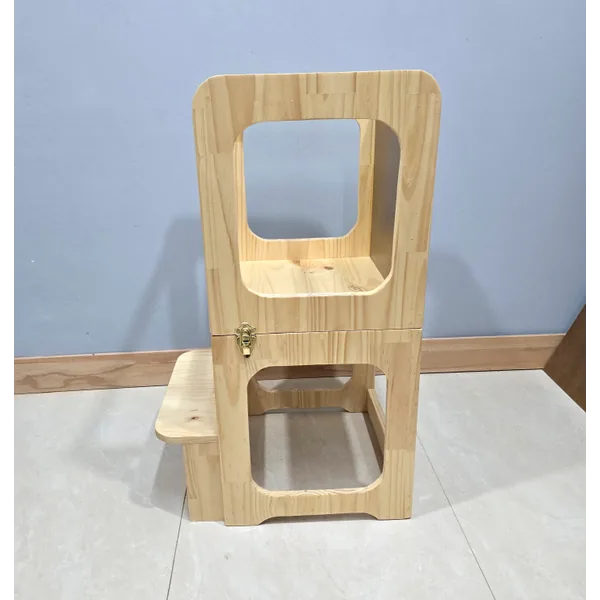

01
Referencia de catálogo
Cambiador de laurel, 3 gavetas
Ficha publicada con medidas 100 × 100 × 40 cm y tres gavetas.

Imagen publicada por Mueblería CamachoMuebles en madera, opciones Montessori y piezas a medida. Diseña la lista de tu próximo espacio.
Guarda tus referencias en una lista local y prepara el siguiente paso. Precios, variantes y existencias se revisan en cada ficha oficial.
Ficha publicada con medidas 100 × 100 × 40 cm y tres gavetas.

Torre de aprendizaje plegable; consultar indicaciones de uso al fabricante.

Ficha publicada con medidas 90 × 40 × 40 cm; acabado natural.
Fabricación a medida en madera; catálogo para hogar, oficina y mobiliario Montessori, con envíos nacionales.
Prueba cantidades y condiciones. Obtén un resumen local para revisar antes de hablar con la empresa.
Datos revisados el 3 de noviembre de 2026. La empresa confirma cualquier condición vigente.
Ficha publicada con medidas 100 × 100 × 40 cm y tres gavetas.
Torre de aprendizaje plegable; consultar indicaciones de uso al fabricante.
Ficha publicada con medidas 90 × 40 × 40 cm; acabado natural.
La página de historia presenta un negocio familiar de fabricación en madera.
La empresa anuncia muebles a medida y opciones de acabado.
El catálogo se organiza en Montessori, Hogar y Oficina.
La web menciona cedro, pino y laurel; cada pieza debe confirmar su material.
La tienda oficial ofrece compra y un formulario de contacto para consultas.